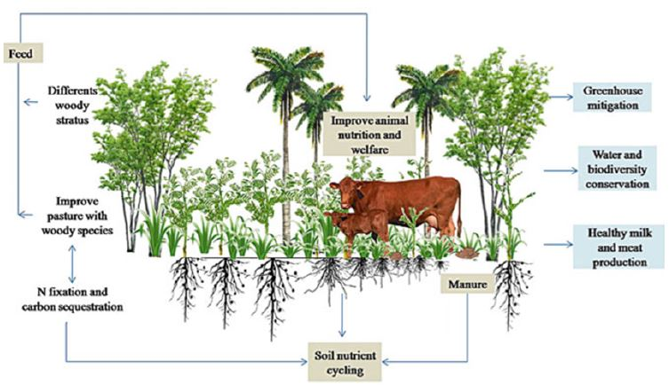
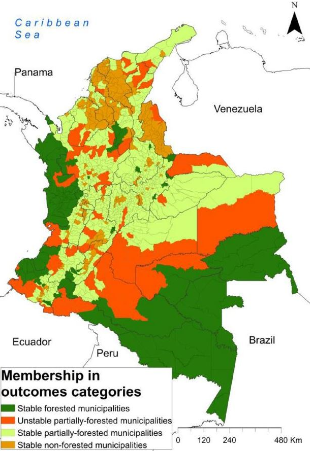
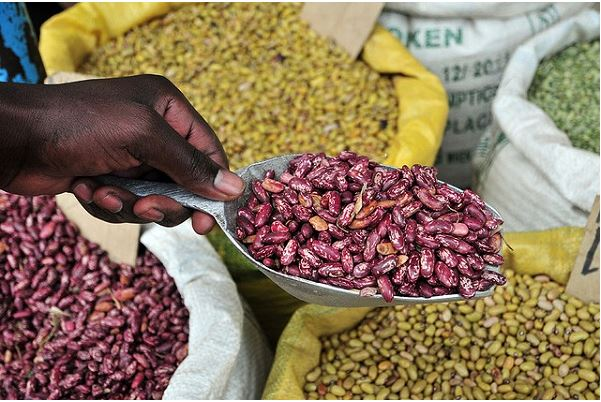
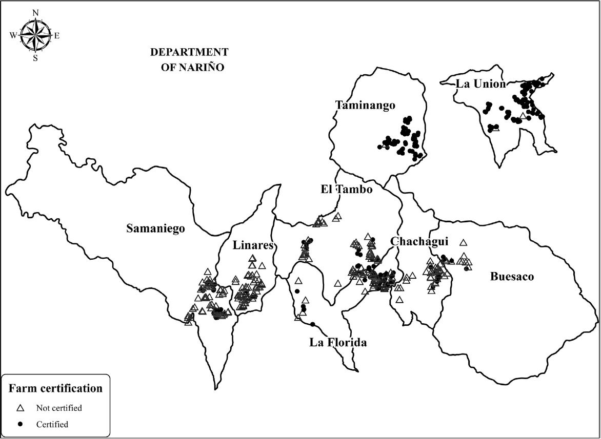
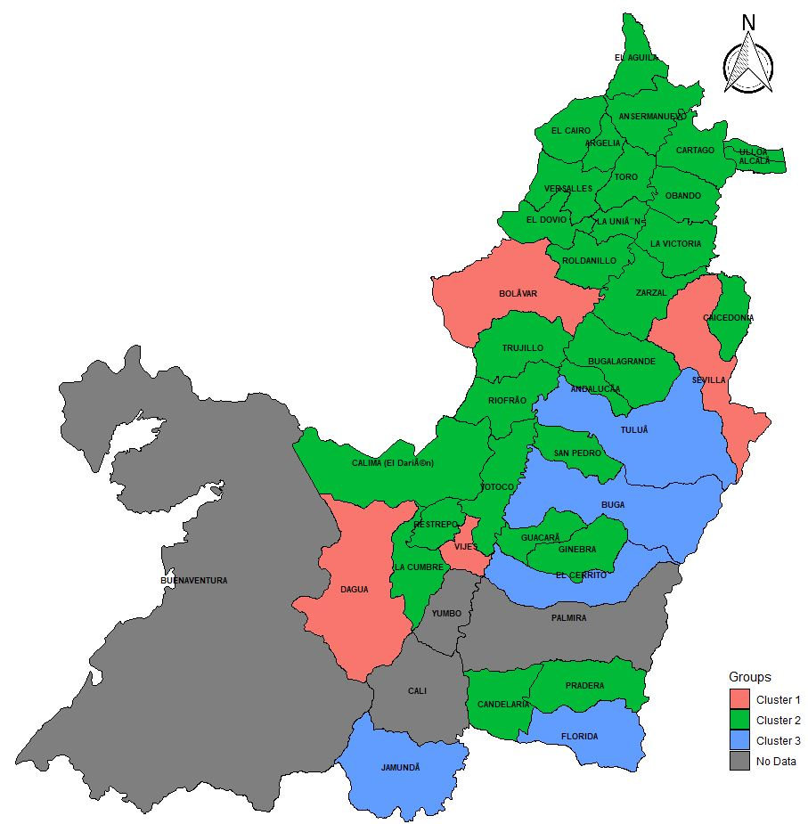

Work in Progress
Trees, cows and cheese: A win-win-win strategy?

Abstract:
In this article, I study the effect of reducing capital and knowledge constraints on SPS adoption in cattle farms of Colombia.To this end, I analyze an intervention carried out with cattle farmers in Caquetá, between 2018 and 2020. I investigate the effect of a technological kit, consisting of two parts: i) inputs and ii) technical assistance, on sustainable livestock practices adoption and livestock productivity. Taking advantage of the fact that there are differences in the intensity level of the kit, using a methodology of differences in differences, I use the low intensity group as a control group to know the additional effect of medium and high intensity level treatments.
Access to High Quality Coffee Markets: Possible for All?

Abstract:
Access to high-value markets can improve farmers’ well-being, provided that these markets remunerate quality. Classical economic theory, under a scenario of perfect information, holds that the price received by producers reflects the quality of their product. Therefore, it implies that produce-quality determines a farmer’s access to such high-value markets. However, in practice, producers or buyers cannot readily evaluate a product’s quality. In this case study, we explore the effect of mitigating such asymmetry of information (on product quality) on access to high-value markets. Specifically, we consider the effect of quantifying and certifying coffee-quality on the price received by small coffee growers in eight municipalities of Colombia’s Nariño department, between 2012 and 2016. Using an econometric methodology of ‘differences in differences’, we find that providing small coffee-growers with technical and commercial advice, alongside a ‘coffee cup test’, increases, on average, their sale price of coffee by $2,710 (COP/kg), in comparison with coffee farmers who did not receive this support. Additionally, we demonstrate that this effect is heterogeneous for the coffee farmers who received the treatment, due to the varying agroecological conditions of the different farms.
Peer-Reviewed Journal Publication
Land related grievances shape tropical forest-cover in areas affected by armed-conflict
Augusto Castro-Nunez, Ole Mertz, Alexander Buritica Casanova, Chrystian C. Sosa, Stephanie T. Lee. May (2017)

Abstract:
Armed-conflicts often occur in tropical areas considered to be of high ‘conservation-value’, termed as such for their biodiversity or carbon-storage functions. Despite this important overlap, few studies have assessed how forest-biomass is affected by armed-conflicts. Thus, in this paper we develop a multinomial logit model to examine how outcomes of the interactions between carbon-storage, armed-conflict and deforestation rates are linked to social, institutional and economic factors. We use Colombia as a case study because of its protracted armed-conflict, high forest-cover, sustained deforestation rates and ongoing peace processes. Our empirical results show that the impacts of armed-conflicts on forest-cover are connected to specific socio-economical processes, such as unequal land distribution and landgrabbing, which typically occurs as part of ‘agricultural colonization’. Findings address a research gap by providing statistically sound evidence for associations between armed-conflicts and land-related grievances, which has rarely been demonstrated empirically. Our results also suggest that forest commons are associated with reduced armed-conflict, and simultaneously provide contributions to carbon storage and to meeting basic needs. Moreover, our forest-conflict transition models provide useful visual means to capture and relay to policymakers-the causes of forest cover-changes in a conflict-affected country. Finally, our findings imply that in dedicating their efforts to resolving land-ownership disputes, the Colombian government might uphold their international climate change commitments via reducing deforestation and hence forest based carbon emissions, while pursuing their national security objective via undermining opportunities for guerrilla groups to operate.
Full Citation: Castro-Nunez, Augusto, Ole Mertz, Alexander Buritica, Chrystian C Sosa, and Stephanie T Lee. 2017. “Land Related Grievances Shape Tropical Forest-Cover in Areas Affected by Armed-Conflict.” Applied Geography 85: 39–50.
Salomón Pérez, Alexander Buritica Casanova, Adewale Oparinde, Ekin Birol, Carolina Gonzalez, Manfred Zeller. April (2017)

Abstract:
The success of biofortification, the process of generating new staple crops varieties with higher micronutrient content, depends on whether those biofortified cultivars are accepted by target populations. Consumer behavior economics argues that socioeconomic, cultural and biological characteristics define consumer preferences for specific product attribute. This study aims to establish which socio-demographic characteristics predict respondents’ preferences for the main sensory attributes of an iron bean variety. A home use testing approach and sensory evaluation was applied to 360 families in northwest Guatemala. We found that revealed preferences are mostly culturally formed and market related, more than influenced by socio-demographic characteristics.
Full Citation: Pérez, S., Buritica, A., Oparinde, A., Birol, E., Gonzalez, C., & Zeller, M. (2017). Identifying Socioeconomic Characteristics Defining Consumers’ Acceptance for Main Organoleptic Attributes of an Iron-biofortified Bean Variety in Guatemala. International Journal on Food System Dynamics, 8(3), 222-235.
Wytse Vellema, Alexander Buritica Casanova, Carolina Gonzalez, Marijke D’Haese. July (2015)

Abstract:
Farm certification is rapidly becoming a sine qua non for access to specialty coffee markets. At the centre of these changes are smallholder coffee producers, responsible for 80% of global coffee production. Although rural households are known to depend on more than agricultural production alone, the literature on specialty coffee and certification has rather narrowly focused on coffee income and production. In this study, broader impacts are explicitly taken into account. Household income was decomposed into categories corresponding to specific income-generating activities and coffee income was broken down into price, yield and area effects. Results show that coffee certification encourages farmers to specialise in coffee production, increasing coffee income but not total household income, at least not in the short run. The time and effort required to attain the higher coffee income offered by certified production means farmers have to give up other activities. This substitution effect cancels out the income effect, such that there is no increase in total household income. The lack of an effect on total household income suggests the return to the additional labour effort required for certified coffee production is not higher than in other activities, questioning the benefits of certification for small-scale producers.
Full Citation: Vellema, W., Casanova, A. B., Gonzalez, C., & D’Haese, M. (2015). The effect of specialty coffee certification on household livelihood strategies and specialisation. Food Policy, 57, 13-25.
Alexander Buritica Casanova and Fabio Arias-Arbelaez . Octuber (2015)

Abstract:
This research analyzes the environmental management in the municipalities of Valle del Cauca, Colombia. The study begins with an exploratory question ¿How municipalities of Valle del Cauca respond to environmental management?. Environmental reports of the Plan of Development environment by the Controller Departamental found out that environmental management is different among municipalities. Therefore, the principal research question is ¿Why municipalities of Valle del Cauca respond to environmental management unevenly?. To answer this question a descriptive methodological approach was implemented. The principal results show that from the six dimensions of governance it is found that political stability and absence of violence, government effectiveness and control of corruption can explain more or less the different response municipalities for environmental management.
Full Citation: BURITICA-CASANOVA, ALEXANDER, & ARIAS-ARBELAEZ, FABIO. (2015). GESTIÓN AMBIENTAL Y GOBERNANZA EN LOS MUNICIPIOS DEL VALLE DEL CAUCA. Ambiente y Sostenibilidad, 5, 78-96.